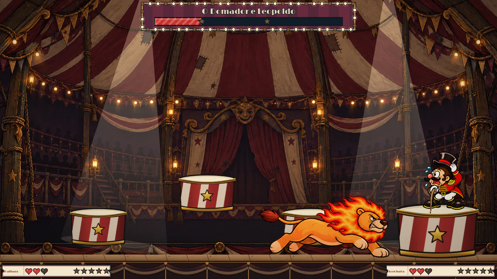
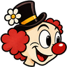
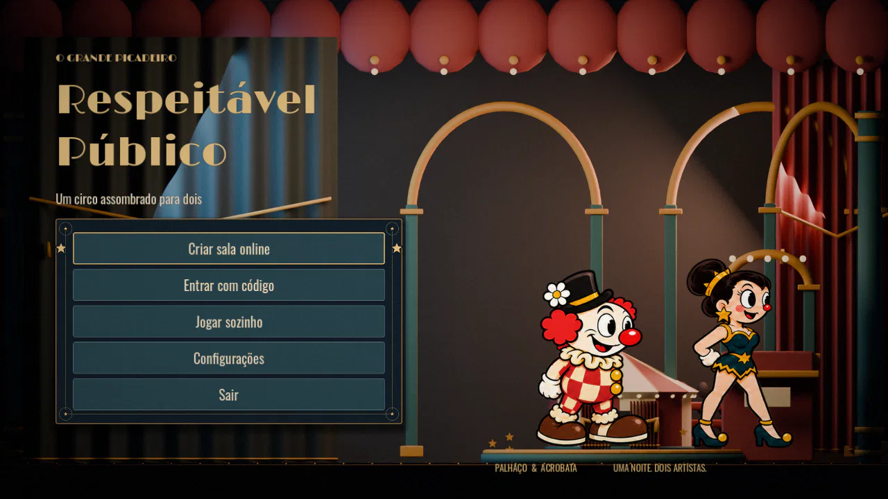
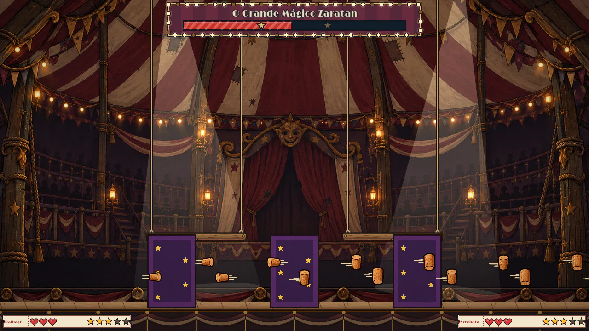
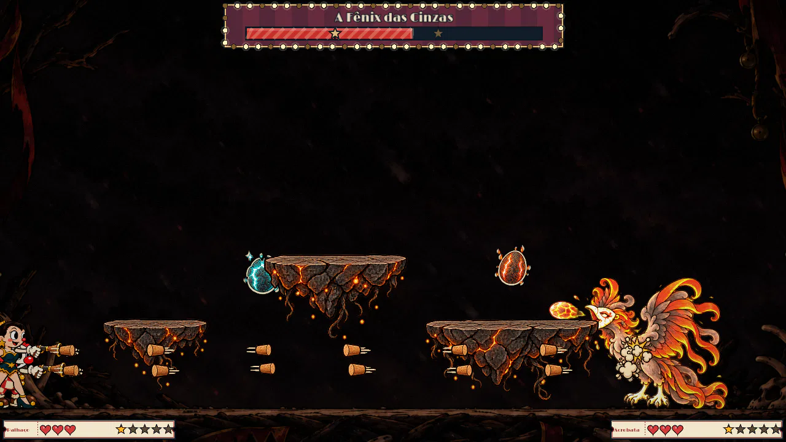
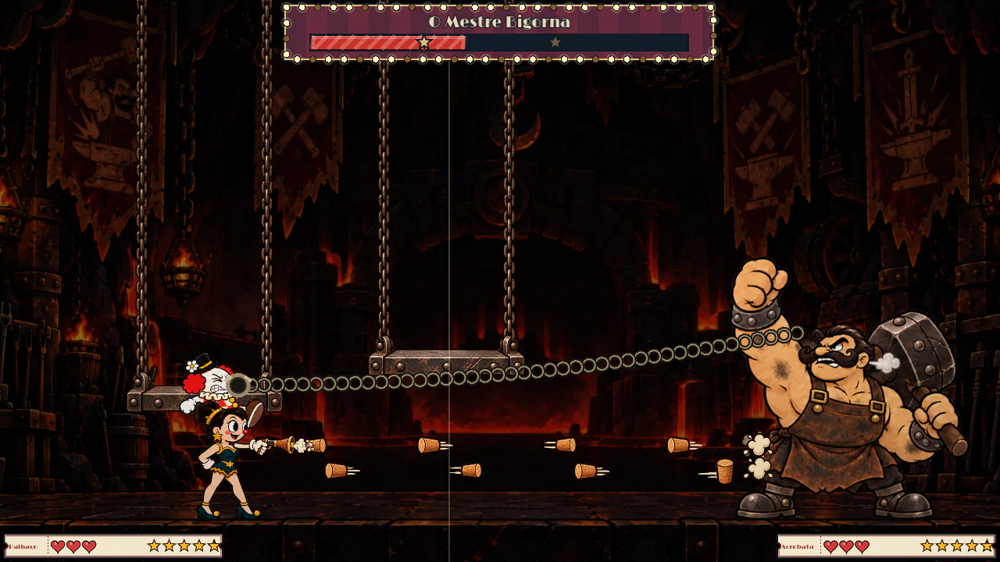

Área 1 · O Grande Picadeiro
Nº 1 O Domador e Leopoldo
Um domador baixinho e convencido, com um leão enorme que só finge obedecer. Até a juba pegar fogo.

Respeitável PúblicoO Grande Picadeiro apresenta
Um circo assombrado para dois.
Chefões gigantes no traço dos desenhos dos anos 30. Entre no picadeiro sozinho ou chame sua dupla por um código.
Grátis · Windows · Android · iPhone · Português
O espetáculo
Uma pistola de rolha, um parceiro e a vontade de tentar só mais uma vez.




Direto do picadeiro · imagens do jogo
As atrações

Área 1 · O Grande Picadeiro
Um domador baixinho e convencido, com um leão enorme que só finge obedecer. Até a juba pegar fogo.

Área 1 · O Grande Picadeiro
Tico e Teco nunca param de malabarizar, inclusive um com o outro. Um chefão que também é dupla.

Área 1 · O Grande Picadeiro
Corra pelos tetos dos vagões até a locomotiva. Atenção às pontes baixas: abaixe!

Área 1 · O Grande Picadeiro
Cartas que perseguem, o jogo das três caixas e um final gigante. Ele sabe que o circo está amaldiçoado.

Área 2 · A Ilha do Vulcão
Um rei de basalto rachado, vaidoso, que exige reverência do alto do trono de lava.

Área 2 · A Ilha do Vulcão
Uma ave de fumaça e brasa, com máscara de porcelana. Nunca para de se exibir no ninho do pico.

Área 2 · A Ilha do Vulcão
O ferreiro da ilha, com armadura, martelo e correntes que puxam quem se distrair.

Área 2 · A Ilha do Vulcão
A atração principal do Festival do Fogo. Pisem juntos nas válvulas para abrir a máscara.
A viagem
Venceu o Grande Picadeiro? Subam no biplano da trupe e atravessem o mar ao pôr do sol até a Ilha do Vulcão, onde quatro novas atrações esperam pelo Festival do Fogo.
Jogar online
Sem conta, sem configurar internet. Um cria a sala, o outro digita o código, e os dois caem no mapa juntos.
O jogo avisa no menu quando sai uma atualização. Versões diferentes não se conectam.
Escolha o save da dupla. O progresso fica guardado no aparelho de quem cria a sala.
Ele aparece no mapa enquanto o parceiro não entra. Mande por mensagem, ligação ou grito.
Digite o código, toque em Conectar e pronto: os dois caem no mapa juntos.


Código da sala
Exemplo de código de sala
Controles
Toque ou passe o mouse em uma tecla ou em uma ação. Tudo pode ser trocado em Configurações.
Os dois jeitos funcionam ao mesmo tempo: WASD com J K L I, ou setas com Z X C V.

No celular o tiro é automático nas lutas: você só se preocupa em desviar.
Funciona com controles de Xbox e similares no PC.
Baixar
ZIP · sem instalar nada
APK · fora da Play Store
Sem instalar · Safari, Chrome, Edge
Sempre a versão mais nova, direto do GitHub.
Perguntas
Sim. Sem anúncios, sem compras dentro do jogo e sem conta. Os ingressos da loja se ganham vencendo chefões.
Dá. No modo solo você troca entre o Palhaço e a Acrobata, e cada tiro no chefão vale por dois.
Sim, desde que os dois estejam na mesma versão. A sala por código funciona igual nos dois.
No aparelho de quem cria a sala (ou no seu, jogando sozinho). Atualizar o jogo não apaga o save.